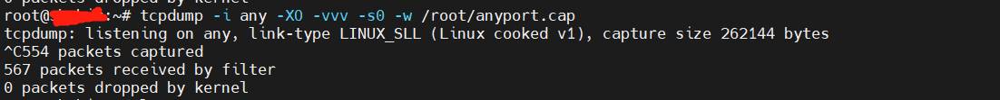

场景
- 在调研一个项目，调用的是服务器上安装第三方服务的http接口，不知道通信中实际发送的内容及header，所以需要抓包来解决问题，但是以前只是处理过wireshark本地抓包，网上找到个简单的方法，特此记录。
前提
- 本地wireshark，专门抓包工具，不会使用自行百度。
- 服务器端需安装抓包工具tcpdump。
操作步骤
1 使用工具登录对应服务器（譬如mobaX等），使用root用户；（此处并未试过其他授权用户是否可以执行该命令）
2 执行抓包保存文件指令 tcpdump -i any -XO -vvv -s0 -w /root/anyname.cap（目录指定所需保存文件的位置，文件名可以自行定义，扩展名需兼容wireshark）

3 本地找个网页远程执行对应服务器需要调用的http接口；（此步骤按需）
4 完成后ctrl+C中断抓包文件的保存
5 下载抓包文件至本地目录
6 将抓包文件拖入wireshark，解析抓包文件内容即可
参考：服务器抓包知识